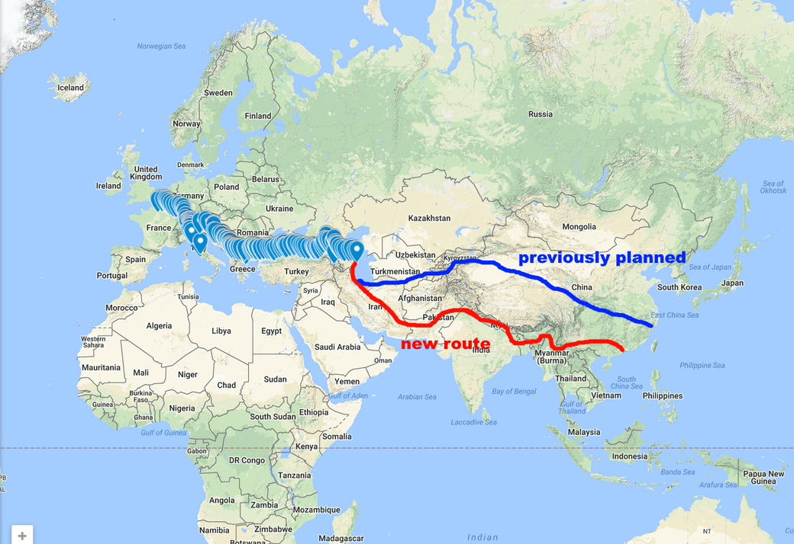

This is the route I traced since the beginning of the trip. There is a marker for every 1-day lap. You can click on each point to have a description of what happened that day.
Here is my (new) planned itinerary that I announced in an october 2017 post. I arrived in Hong Kong in August 2018.
